تصحيح ضعف البصر (ليزك)
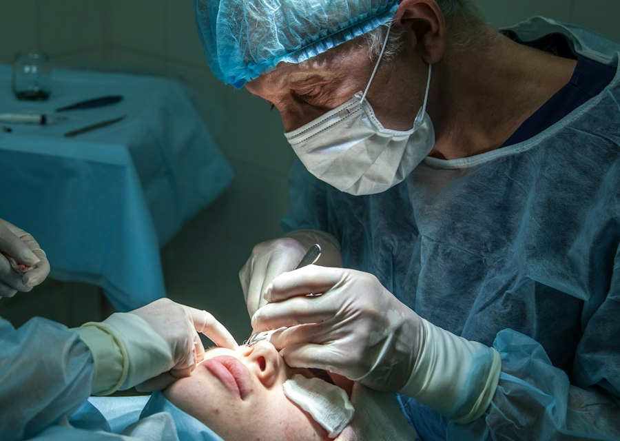
تصحيح قصر النظر وطول النظر والاستجماتيزم بالليزر، بعد تقييم دقيق لسماكة القرنية وخريطتها الطبوغرافية لاختيار التقنية الأنسب.
DR. ALI TALAT KOUSA
استشاري وجرّاح عيون — عضو الجمعية الأوروبية والأمريكية للجراحة الانكسارية
تواصل معنا: 0212683510 0962446401
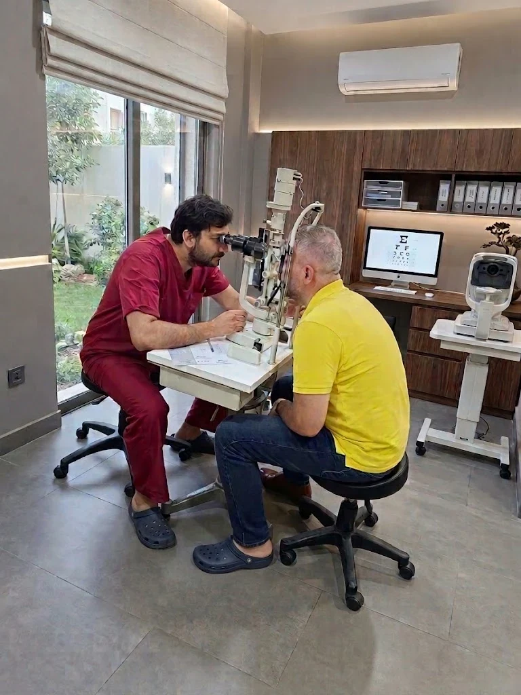
اسحب للتدوير · العجلة أو الأزرار للتكبير · حرّك المنزلق لتمديد الطبقات · اضغط على أي طبقة لقراءة شرحها
الوصف
يمكنك استخدام اللوحة التشريحية في التبويب الآخر.
من الفحص الدوري البسيط إلى الجراحات الدقيقة — بأجهزة تشخيص حديثة وبروتوكولات معتمدة.

تصحيح قصر النظر وطول النظر والاستجماتيزم بالليزر، بعد تقييم دقيق لسماكة القرنية وخريطتها الطبوغرافية لاختيار التقنية الأنسب.
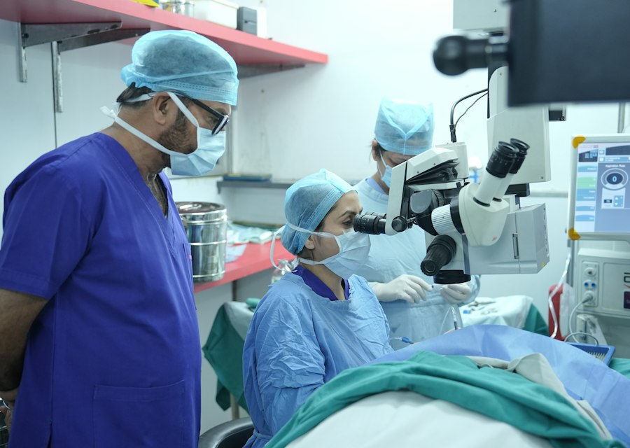
استبدال العدسة المعتمة بتقنية الفاكو الدقيقة مع عدسة صناعية أحادية أو متعددة البؤر، بجرح مجهري ودون غرز غالباً.
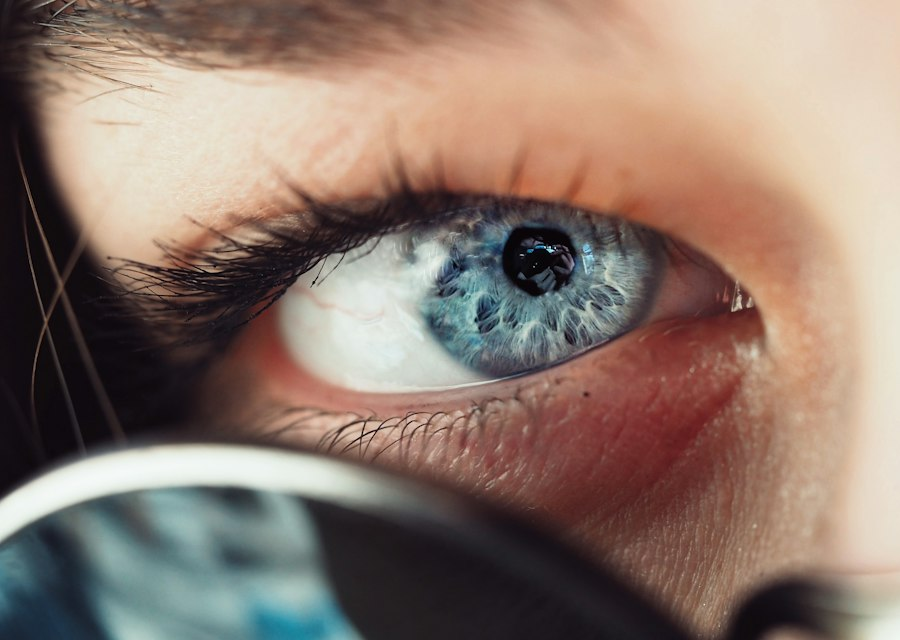
استبدال القرنية المتضرّرة كلياً أو جزئياً لاستعادة الشفافية والرؤية، مع متابعة دقيقة لمنع الرفض.
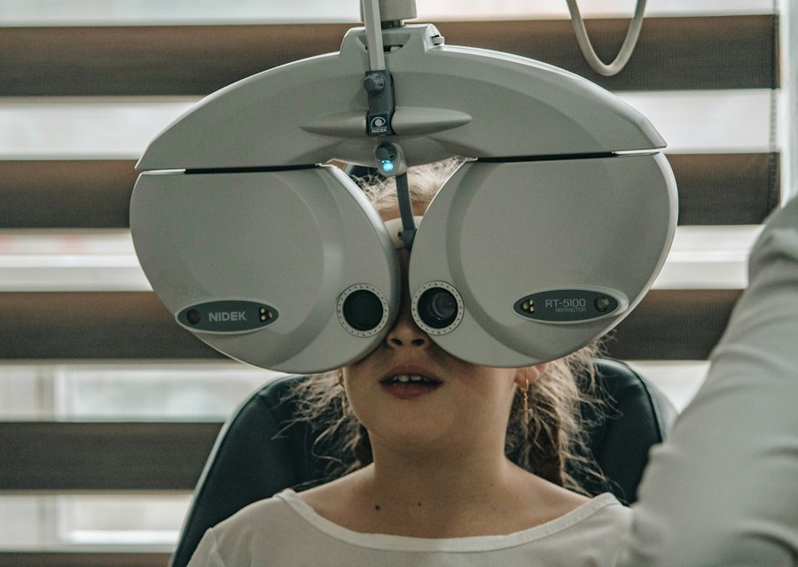
تشخيص ومتابعة اعتلال الشبكية السكري والتنكّس البقعي والانفصال الشبكي، بما في ذلك الحقن داخل الزجاجية والليزر.
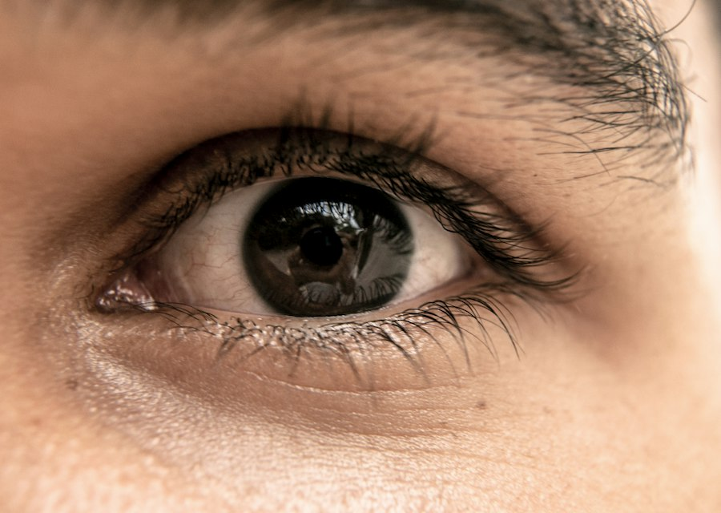
تصحيح انحراف العين لدى الأطفال والكبار لاستعادة توازي العينين والرؤية الثنائية والمظهر الطبيعي.
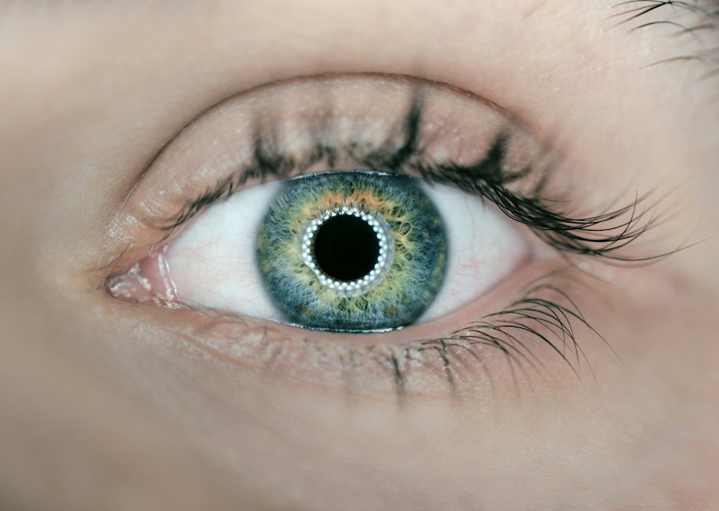
رفع الجفن المتهدّل وإزالة الترهّل والانتفاخ حول العين — لأسباب وظيفية تعيق مجال الرؤية أو لأسباب تجميلية.
استشاري وجرّاح عيون، وعضو الجمعية الأوروبية والأمريكية للجراحة الانكسارية. الفلسفة بسيطة: وقت كافٍ لكل مريض، شرح واضح لكل خيار، وقرار علاجي يُتَّخذ سويّاً.
صُممت العيادة لتقليل وقت الانتظار وللشعور بالراحة: غرف فحص منفصلة، غرفة عمليات مجهّزة، ومسار واضح من الاستقبال حتى المتابعة.
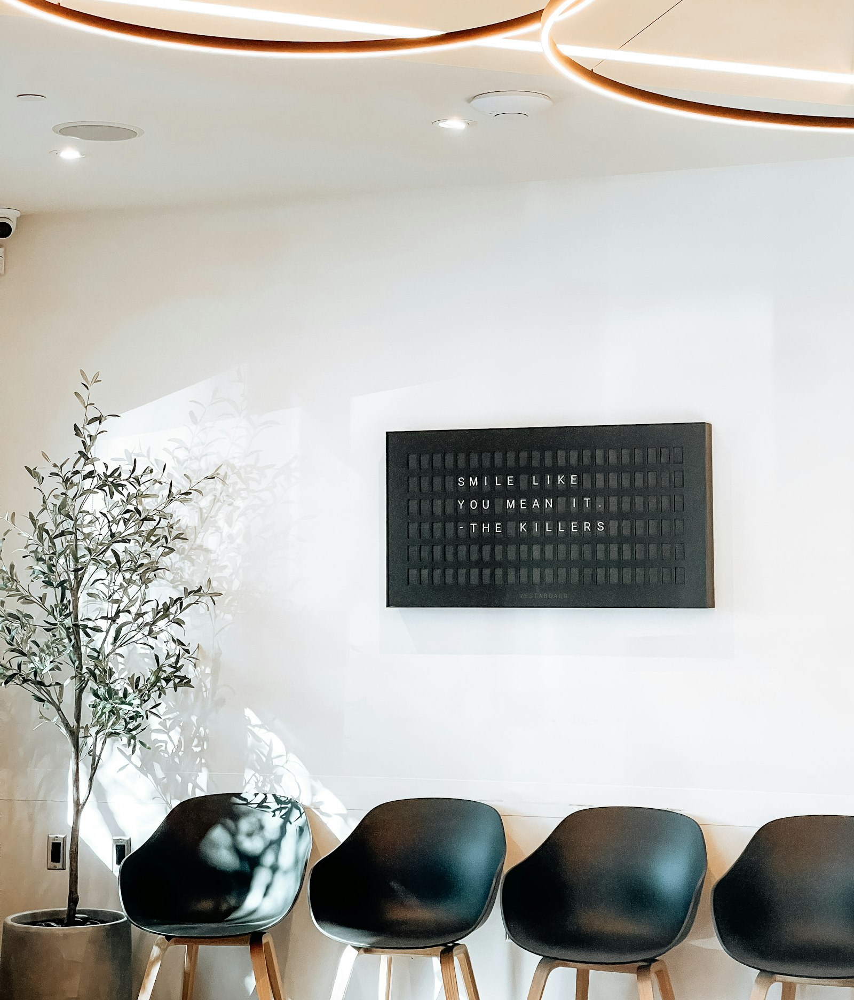
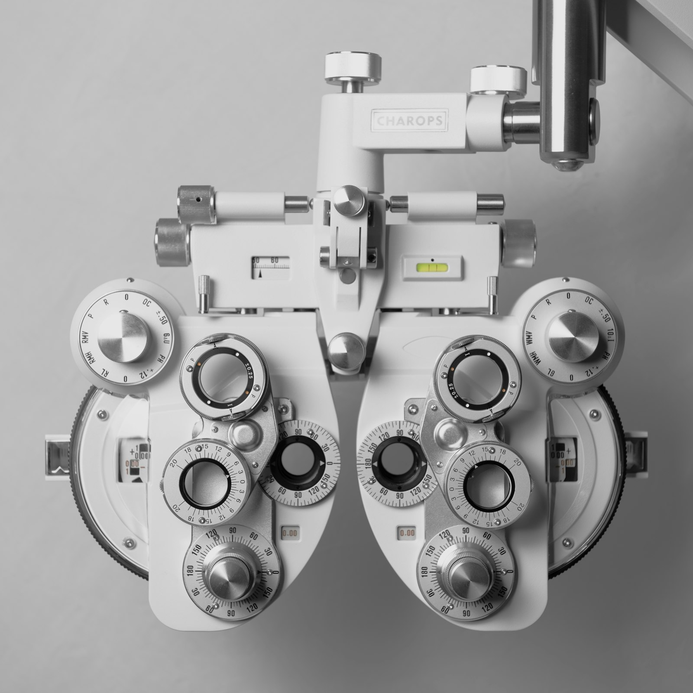
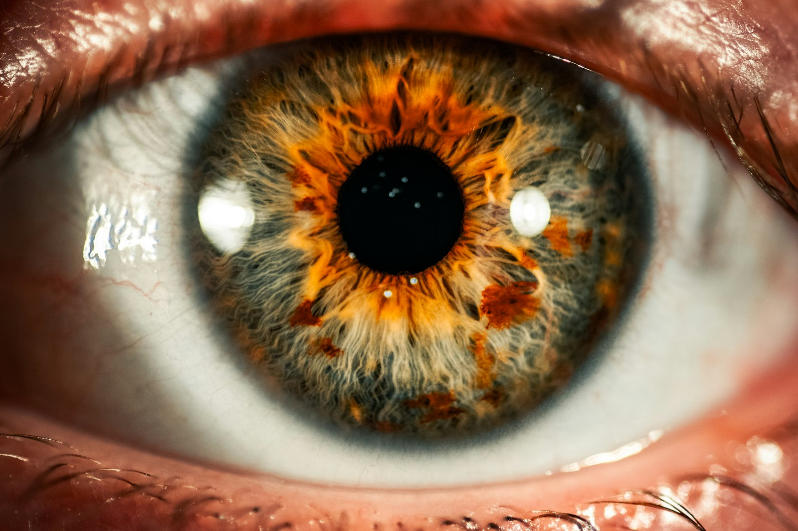
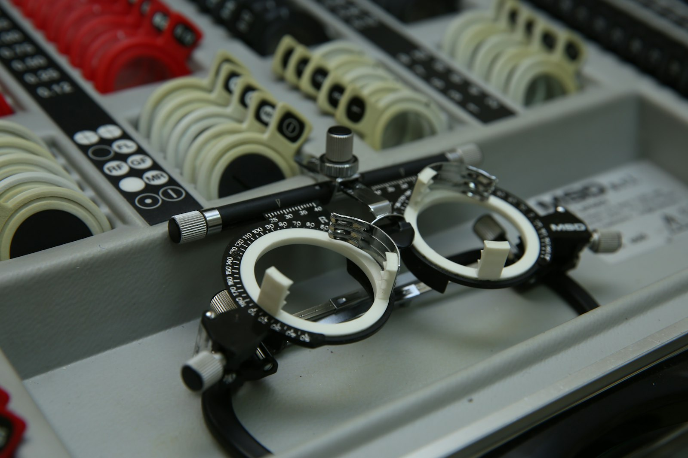
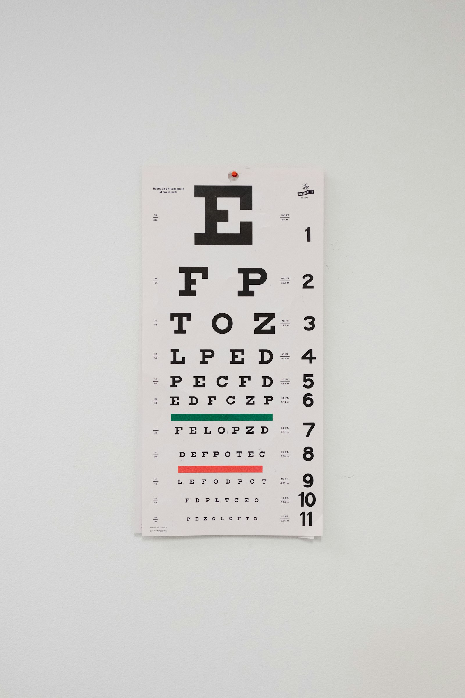
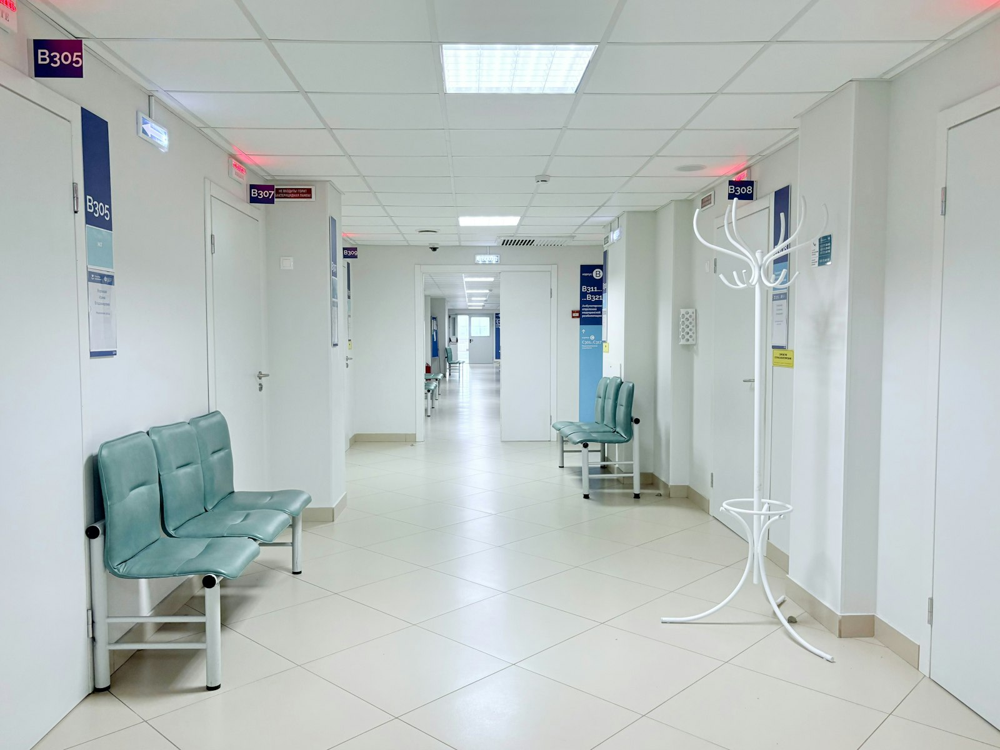
OCT للشبكية والعصب البصري، طبوغرافيا القرنية، تصوير قاع العين، وقياس المجال البصري الآلي.
معايير تعقيم صارمة تتيح إجراء عمليات الساد والليزر في اليوم نفسه مع مغادرة المريض بعد ساعات.
مدخل ميسّر ومواقف قريبة، وموقع سهل الوصول داخل مدينة حلب.
أربع خطوات واضحة، من الحجز حتى خطة العلاج.
اتصل على رقم العيادة لحجز موعدك. يُرجى إحضار النظارة الحالية والتقارير الطبية السابقة وقائمة الأدوية إن وُجدت.
قياس حدة الإبصار وضغط العين والانكسار الآلي — عادةً خلال عشر دقائق قبل دخولك إلى الطبيب.
فحص بالمصباح الشقي وتصوير للشبكية عند الحاجة. قد يشمل توسيع الحدقة، لذا يُفضّل عدم القيادة بعد الزيارة.
شرح النتائج والخيارات المتاحة مع التكلفة والمدة، ثم تحديد موعد المتابعة أو العملية إن لزم.
لا، يمكنك الحجز مباشرة. وإن كان لديك تحويل أو تقارير سابقة فإحضارها يساعد على تسريع التشخيص.
إذا شمل الفحص توسيع الحدقة فستكون الرؤية ضبابية لبضع ساعات. ننصح بمرافق أو باستخدام وسيلة نقل عامة.
الإجراء نفسه يستغرق نحو 15–20 دقيقة لكل عين تحت تخدير موضعي بالقطرات، ويغادر المريض في اليوم ذاته.
غالباً من تجاوز 18 عاماً مع ثبات درجة النظر لسنة على الأقل وسماكة قرنية كافية، ويُحدَّد ذلك بعد فحص وخريطة قرنية.
بالاتصال المباشر على رقم العيادة 0212683510 أو 0962446401 خلال ساعات الدوام.
للحجز أو الاستفسار، اتصل على أحد رقمَي العيادة خلال أوقات الدوام.
| الأحد – الخميس | 16:00 – 19:00 |
| الجمعة والسبت | مغلق |